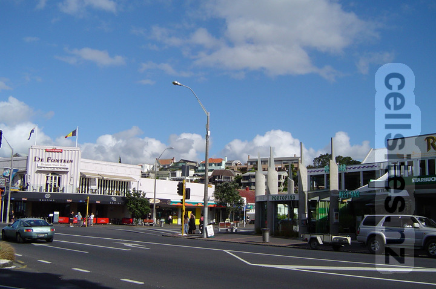
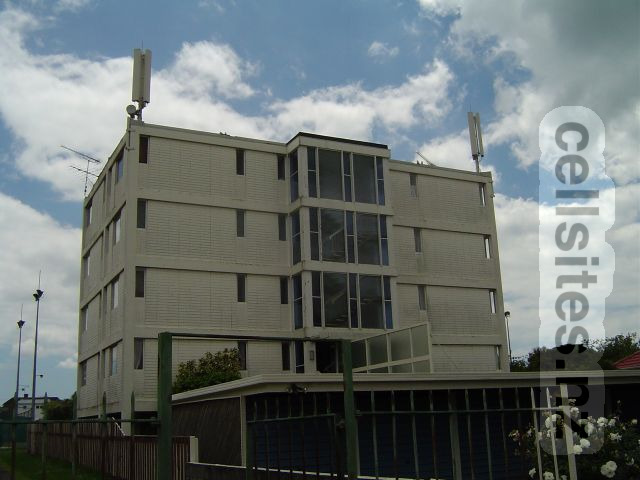
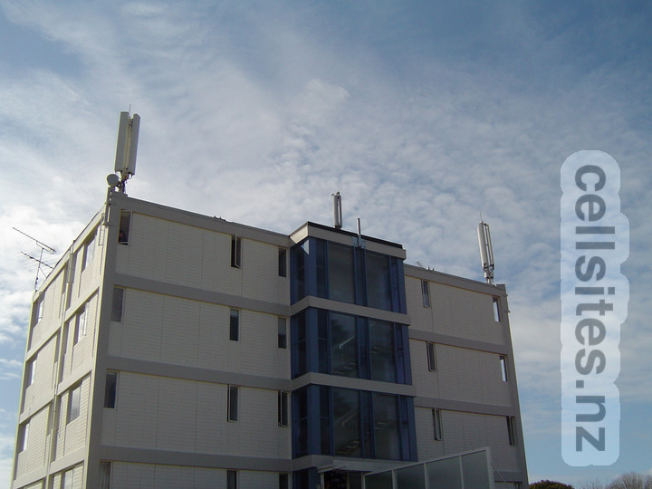

Vodafone microcell site on lightpole in middle of photo. 19 October 2004.
Telecom/Vodafone Mission Bay

Vodafone site in foreground. At the time Vodafone operated two sets of 900 MHz antennas for GSM. Telecom site can just be seen in left background. 1 December 2003.Telecom site in right foreground (see two onmi-directional antennas on top of two light poles). Vodafone site in left background. This photo is taken from the other side of the 2003 photo above. 28 December 2004.

Vodafone later swapped out the right set of antennas with 2100 MHz equipment for UMTS (the left set remaining for 900 MHz GSM). Woosh Wireless also added their antennas in the middle. 28 August 2005.